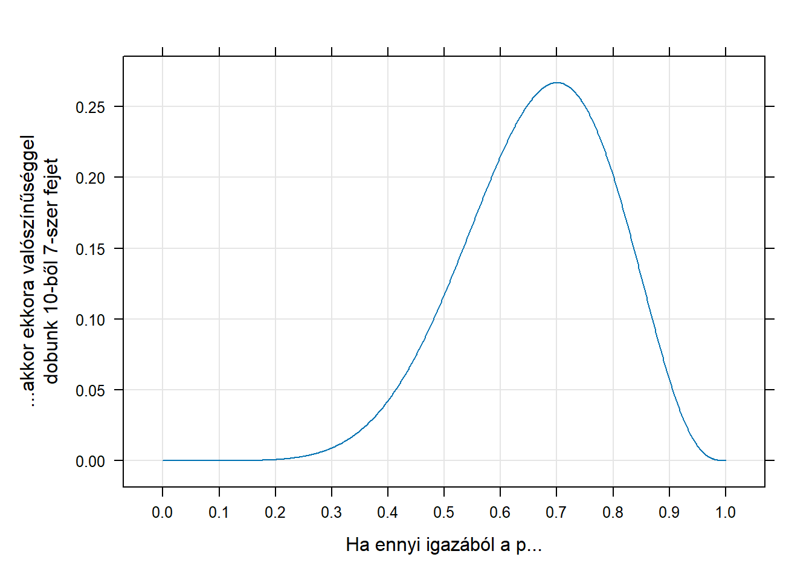
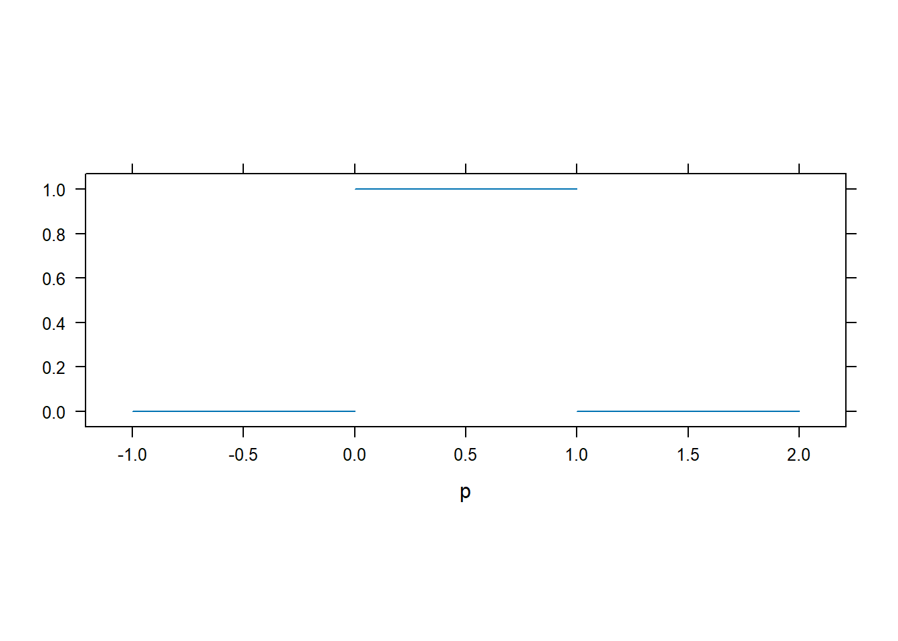
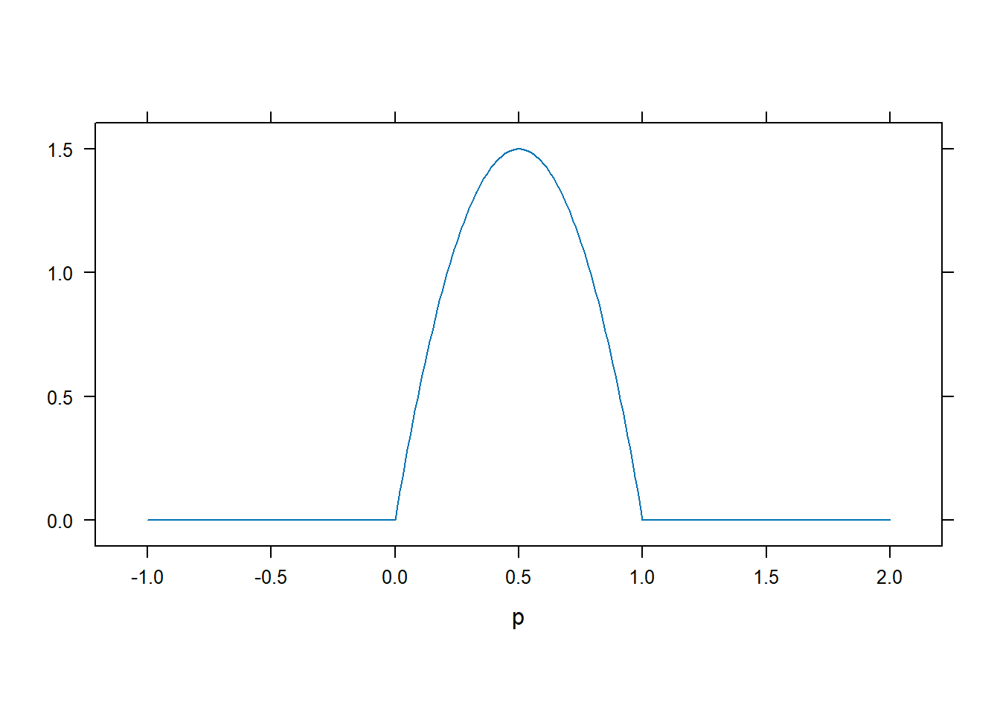
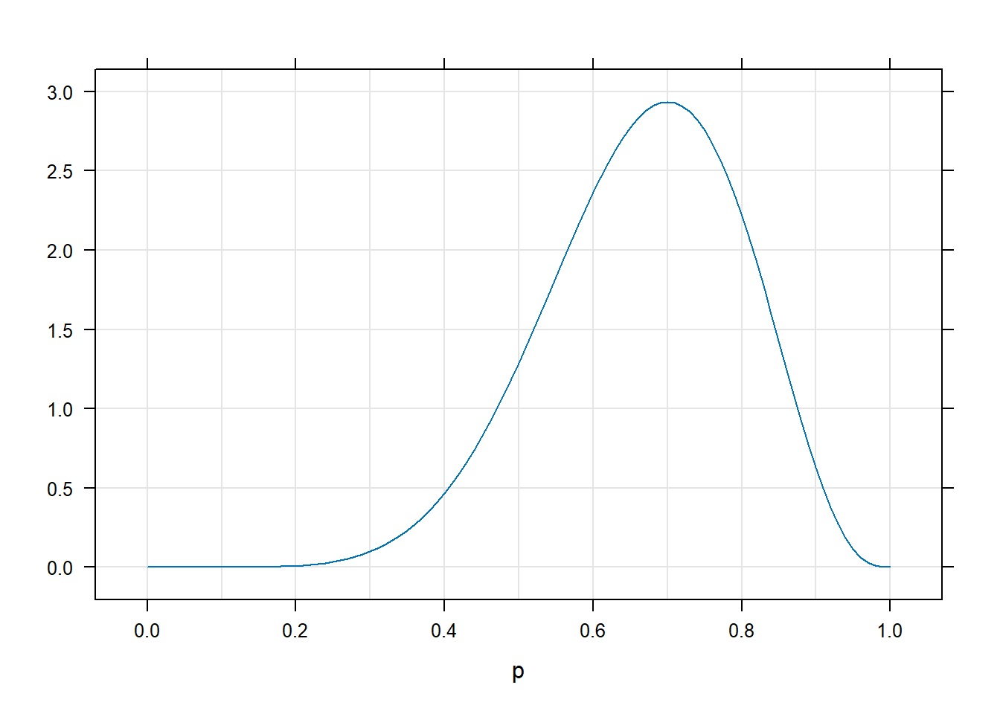
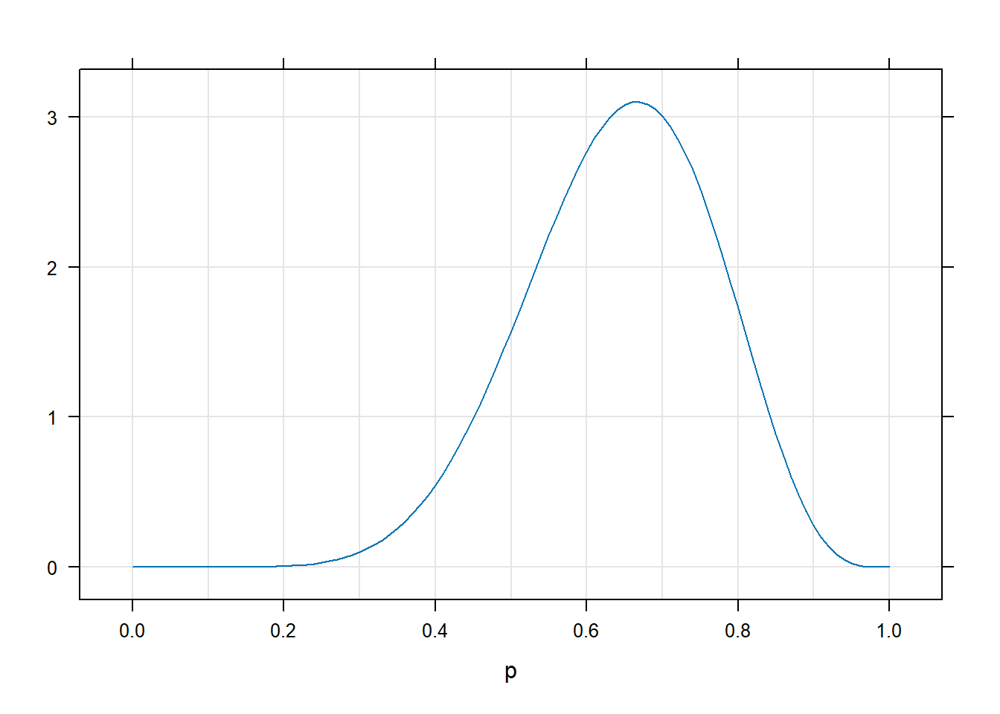
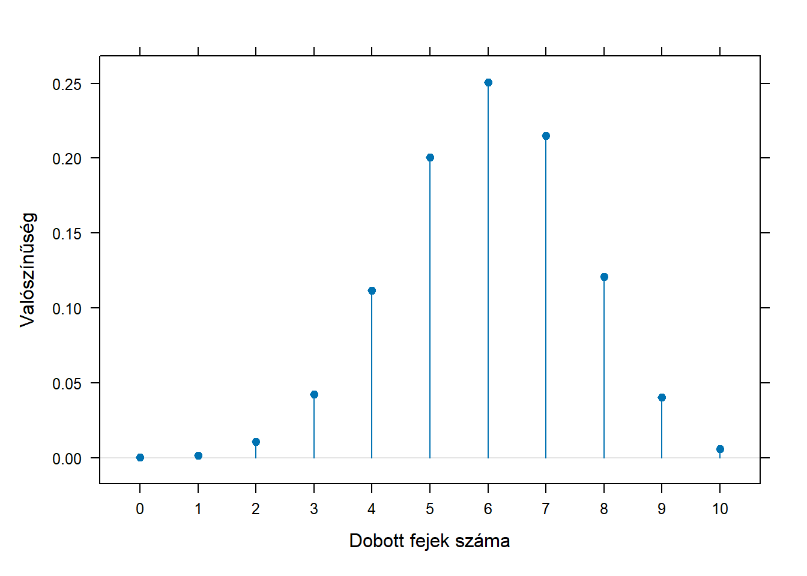

2 A következtető statisztika alapjai
A statisztika szó alatt rengeteg dolgot szoktak érteni. Statisztika annak módszertana, hogy hogyan kell az ország inflációját megbecsülni, statisztika, hogy egy piackutatást vagy közvéleménykutatást hogyan kell megtervezni és kiértékelni, statisztika, hogy 10 számból átlagot számolunk, statisztika, hogy 100 számból egy oszlopdiagramot rajzolunk. A statisztika kicsit matematizáltabb területeit két nagy csoportra szokták osztani, leíró (deskriptív) és következtető (induktív) statisztikára. Egyelőre nem mondom meg, hogy ezek a szavak mit jelentenek, mert a szükséges fogalmakat csak később fogom bevezetni, de annyit mindenesetre elárulok, hogy a továbbiakban ez utóbbiról, a következtető statisztikáról lesz szó. (A deskriptív statisztika általában jóval érthetőbb, és sokkal kevesebb kérdést vet fel.)
2.1 Egy rávezető gyakorlat
Barátunktól kapunk egy pénzérmét, mely nem feltétlenül szabályos, tehát nem biztos, hogy a fej dobás valószínűsége épp 0,5, azaz 50%. Lehet bármennyi, jelöljük \(p\)-vel, egyedül annyit kössünk ki, hogy azért nem 0 és nem 1. A feladat: meghatározni \(p\)-t, azaz megmondani, hogy mekkora valószínűséggel dobunk fejet. Mit csináljuk?
A legtöbben valószínűleg mindenféle statisztikai megfontolás nélkül is azt tennék, hogy elkezdik feldobálgatni a pénzérmét, és számolják, hogy hányszor jön ki fej. Mondjuk, hogy 10-szer dobjuk fel, és 7-szor kapunk fejet. Úgy fogjuk mondani: ez lett a mintánk (a minta szó használatának oka később még világosabb lesz). A statisztika azon területét, ami egy megfigyelt jelenségből igyekszik következtetni valamilyen, a jelenség hátterében lévő dologra (jelen esetben a 10 dobásban kapott 7 fejből a \(p\)-re) szokás induktív (vagy következtető) statisztikának mondani.
Mit tudunk tehát mondani a 10 dobásból kapott 7 fej láttán?
- Ettől még a \(p\) elvileg akármennyi lehet. Furcsa lenne, ha csak mondjuk 1% lenne (és mégis 10-ből 7-szer ez jött ki), de nem lehetetlen! Számoljuk is ki, hogy \(p=0,\!01\) mellett mekkora valószínűséggel dobunk 10-ből 7-szer fejet. Ez esetben elsőre 0,01 valószínűséggel dobunk fejet, másodikra szintén, és ha e kettő dobás független egymástól, akkor annak a valószínűsége, hogy elsőre és másodikra is fejet dobunk \(0,\!01 \cdot 0,\!01\). (Emlékezzünk vissza, hogy független események együttes bekövetkezésének a valószínűsége a külön-külön vett bekövetkezési valószínűségeik szorzata!) Hasonlóképp, annak a valószínűsége, ha \(p=0,\!01\), hogy az első három fej lesz, nem más mint \(0,\!01^3\), és annak, hogy az első 7 fej lesz, \(0,\!01^7\). Pontosan 7 fejet akkor kapunk, ha a maradék 3 dobás mind írás (\(0,\!99^3\)), így ennek az egész sorozatnak a valószínűsége \(0,\!01^7 \cdot 0,\!99^3\). Annak a valószínűsége, hogy 10-ből 7-szer jön ki fej azonban ennél jóval nagyobb, hiszen akkor is 7-szer jön ki, ha az első, harmadik, negyedik, …, nyolcadik lesz fej, akkor is, ha az utolsó 7 dobás fej stb. Némi pofozgatás után kiügyeskedhetjük, hogy ennek a valószínűsége: \(0,\!000000000001164\). Hát ez tényleg nem túl nagy… de nem nulla! Elvileg tehát akkor is dobhatunk 10-ből 7 fejet, ha közben 1% a fej-dobás valószínűsége.
- Más \(p\) választásnál azonban más lesz annak a valószínűsége, hogy ha annyi az igazi \(p\), akkor mekkora valószínűséggel jön ki 10-ből 7 fej. Például ugyenilyen módon számolva, \(p=0,\!02\)-nél ez \(0,\!000000000144567\), \(p=0,\!1\)-nél \(0,\!000008748\), \(p=0,\!5\)-nél \(0,\!1172\) (egyre nő), \(p=0,\!9\)-nél \(0,\!05740\), \(p=0,\!99\)-nél \(0,\!0001118\) (megint csökken).
Lendületbe jöttünk! Akkor már na aprózzuk el, hogy néhány \(p\)-nél számolgatjuk… számoljuk ki nagyon sűrűn 0-tól 1-ig és ábrázoljuk, hogy mit kapunk! Íme:
Azt, hogy ha az ismeretlen paraméter valódi értéke egy adott szám lenne, akkor mekkora valószínűséggel kapjuk azt, amit ténylegesen kaptunk is, likelihoodnak szokás nevezni. (Most valaki megkérdezhetné, hogy miért nem valószínűségnek hívjuk, hogy egyszer ez egy valószínűség. A kérdés jogos, ebben az esetben nyugodtan hívhatnánk valószínűségnek is, mert a pénzfeldobás kimenete diszkrét. Ha azonban folytonos lenne, akkor is szeretnénk egy ezzel teljesen analóg fogalmat használni, amit azonban semmiképpen nem hívhatnánk valószínűségnek, mert az nem valószínűség, úgyhogy a likelihood szó azért jó1, hogy egy kifejezéssel lehessen egységesen mindkét esetre hivatkozni.) A fenti grafikonon tehát a 10-ből 7 fej” minta likelihoodja látszik különböző \(p\)-k mellett.
Na most akkor rakjuk össze hol tartunk. Egy: elvileg akármi lehet a \(p\), attól még kaphatjuk azt, amit ténylegesen kaptunk is (10-ből 7 fej)… tehát biztosan nem tudjuk megmondani, hogy mi a \(p\), bármit is mondunk, az mindenképp tipp lesz. De kettő: igenis tudunk racionálisan tippelni, mert hát csak ne tippeljük már azt a \(0,\!01\)-et, ami mellett borzasztó valószínűtlen, hogy 10-ből 7 jöjjön ki…! Miközben épp most jött ki ez ténylegesen! Sőt, menjünk tovább: tippeljük azt, aminek a fennállása mellett a legvalószínűbb, hogy az jöjjön ki, ami ténylegesen ki is jött! Tehát ami mellett a legnagyobb a likelihoodja a ténylegesen kijött mintának.
A statisztikusok nem „tippelést” mondanak, mert az nem sugározza e terület hideg profizmusát, úgyhogy e helyett a – csakugyan – sokkal komolyabban hangzó becslés szót használják. Amit a fentiekben láttunk, azt úgy hívják: maximum likelihood becslés, és ezek után már túl sok kommentár nemigen kell hozzá, hogy az elnevezés honnan jön: azt fogadjuk el az ismeretlen paraméter becsléseként, amely mellett a ténylegesen kijött minta likelihoodja a maximális.
Mellesleg ránézve az ábrára, a maximum nagyon úgy tűnik, hogy \(0,\!7\), ami elég gyanúsan pont annyi, mint a fejek aránya a mintánkban…
2.2 Egy becslőfüggvény felé
Két dolog van, aminél jobb, ha az ember nem látja hogyan készül: a kolbász és a [statisztikai] becslés.
Edward Leamer
A becslést most megkaptuk egy konkrét mintára. De mi van akkor, ha más a minta? Ha nem 7-szer dobunk fejet, akkor mi lesz a maximum likelihood becslés? Játszunk el egy kicsit a dologgal (azt is beállíthatjuk, hogy hányszor dobtunk):
#| '!! shinylive warning !!': |
#| shinylive does not work in self-contained HTML documents.
#| Please set `embed-resources: false` in your metadata.
#| standalone: true
#| viewerHeight: 600
library(shiny)
library(miniUI)
if (FALSE) {
library(munsell)
}
ui <- miniPage(
miniTitleBar( "Likelihood különböző minták mellett" ),
miniContentPanel(
sliderInput( "n", "Dobások száma:", 1, 100, 10, 1, ticks = FALSE ),
uiOutput( "kselect" )
),
miniContentPanel(
plotOutput("plot", height = "100%")
)
)
server <- function(input, output) {
output$kselect <- renderUI({
sliderInput( "k", "Fejek száma:", 0, input$n, 7, 1, ticks = FALSE )
})
output$plot <- renderPlot({
if( !is.null( input$k ) ) {
lattice::xyplot( dbinom( input$k, input$n, seq( 0, 1, 0.001 ) )~seq( 0, 1, 0.001 ), type = "l",
scales = list( x = list( at = seq( 0, 1, 0.1 ) ) ), grid = TRUE,
xlab = "p", ylab = "A beállított minta likelihoodja",
panel = function( ... ) {
lattice::panel.abline( v = seq( 0, 1, 0.1 ), col = scales::alpha( "black", 0.1 ) )
lattice::panel.xyplot( ... )
})
}
})
}
shinyApp(ui, server)Eleget próbálkozva valószínűleg mindenkiben kialakul egy benyomás: a maximum likelihood becslés mindig épp a fejek aránya a mintában, tehát a dobálgatásos kísérletsorozatunkban.
Mondom a jó hírt: a dolog nem véletlen. Matematikailag bebizonyítható, hogy ez mindig így kell legyen: a maximum likelihood becslés az ismeretlen paraméterre (a fej-dobás valószínűségére) a mintabeli arány lesz. Vegyük észre, hogy ezzel egy jóval erősebb eredményt értünk el, mint az előző pontban, hiszen nem egy konkrét helyzetre adtuk meg a jó becslést, hanem egy általános receptet találtunk, ami minden mintára megadja, hogy annál a mintánál mi lesz a jó becslés! A recept tehát egy általános számítási eljárás: megmondja, hogy mit csináljunk a mintában lévő megfigyelésekkel (jelen esetben: számoljuk meg, hogy hány fej van benne, majd osszuk el a dobások számával), hogy megkapjuk az abból a mintából számolható becslést. Az ilyen „általános receptet” szép nevén becslőfüggvénynek nevezzük. A valószínűség maximum likelihood becslőfüggvénye tehát a mintabeli arány.
2.3 A bayes-i probléma
Sok nehézséget megspórolnánk, ha [a bayes-i statisztika hívei] követnék Bayes példáját, és csak a haláluk után publikálnának.
Maurice Kendall
Azt gondolom, hogy van jogos érv a nem bayes-i eljárások használatának védelmében, jelesül, a tudatlanság.
John Skilling
Eddig látszólag minden szép, tiszta és világos. Kézenfekvő a levezetés ahogyan eljutottunk a maximum likelihood becslésig, tökéletesen logikus volt minden lépés. De nézzük csak meg jobban, hogy milyen feltételes valószínűséget vizsgáltunk ott! \(\mathbb{P}\left(\text{minta}\mid\text{ismeretlen paraméter}\right)\). Ha elég sokáig és elég szúrós szemmel nézzük ezt, akkor valószínűleg egyszer csak elfog minket a jeges rémület: a Bayes-tételről szóló részben (@ref(bayesvalszam). alfejezet) pont az ilyen valószínűségek használatával követtünk el kapitális hibát! Hiszen, nézzük meg, pont ugyanaz a baj itt is: arra feltételezünk, amit nem ismerünk, és annak a valószínűségét kérdezzük, amit ismerünk! Ahogy már ott is láttuk, pont fordítva kellene: nem az érdekel minket, hogy az ismeretlen paraméter ismeretében mit tudunk mondani a mintáról, hanem az, hogy a minta ismeretében mit tudunk mondani az ismeretlen paraméterről!
Szerencsére épp az ott megtanultak miatt nem esünk pánikba, hiszen tudjuk mi a teendő, hogy megfordítsuk a dolgot, és áttérjünk a tényleg releváns feltételes valószínűségre:
\[\mathbb{P}\left(\text{ismeretlen paraméter}\mid\text{minta}\right)=\frac{\mathbb{P}\left(\text{minta}\mid\text{ismeretlen paraméter}\right)\cdot \mathbb{P}\left(\text{ismeretlen paraméter}\right)}{\mathbb{P}\left(\text{minta}\right)}.\]
A számláló első tagja nem probléma: ez épp a likelihood! A nevező szintén nem probléma, a Bayes-tételnél látott trükkel itt is elintézhetjük, ha egyébként a számlálót ismerjük. De mi a helyzet a \(\mathbb{P}\left(\text{ismeretlen paraméter}\right)\)-rel…?
Próbáljuk megérteni, hogy ez mit jelent. Mi a valószínűsége annak, hogy a paraméter adott értékű, úgy hogy a mintát nem is ismerjük. Mit gondolunk arról, hogy milyen a fej-dobási valószínűség, még mielőtt egyetlen egyszer is feldobtuk volna az érmét? Valaki esetleg azt mondhatja: semmit, hát épp ezért kezdjük dobálni! Ez egy jogos ellenvetés, de egyelőre rakjuk félre, vagy mondjuk azt, hogy a „semmit nem gondolunk”, az ezt jelenti2:

Tehát: 0-nál kisebb és 1-nél nagyobb nem lehet a fej-dobási valószínűség, azon belül pedig minden érték környékére ugyanakkora valószínűséggel esik3.
Ha azonban jobban megnézzük, akkor most egy nagyon erőteljes eszközt kaptunk a kezükbe. A Bayes-tétel ugyanis lehetővé teszi, hogy felhasználjuk ha van valamilyen előzetes ismeretünk, elképzelésünk a paraméter eloszlásáról! Például az érmét egy megbízható barátunktól kaptuk, és azt gondoljuk, hogy – ha nem is biztosan – de valószínűleg nem cinkelt, legalábbis nem nagyon. Ekkor a következő lehet a feltételezésünk a fej-dobás valószínűségéről, még mielőtt egyetlen egyszer is feldobtuk volna:

Ezeket az eloszlásokat szokták – a korábban mondottak fényében nagyon is érthető szóval – prior eloszlásnak nevezni.
Mit kapunk a bayes-i megközelítés eredményeként? Korábban azt írtam, hogy \(\mathbb{P}\left(\text{ismeretlen paraméter}\mid\text{minta}\right)\), de ezt némileg idézőjelbe kell tenni: az ismeretlen paraméter egy folytonos dolog (bárhol lehet 0 és 1 között), tehát nem arról lesz szó, hogy mekkora valószínűséggel vesz fel egy értéket, hanem eloszlása lesz. Ami tulajdonképpen teljesen logikus: van egy eloszlása a kísérletezgetésünk előtt (a prior eloszlás), és egy másik a kísérletezés után. Hát persze: a Bayes-tétel, amint láttuk, beépít egy információt, és itt is ez történt: fogja a prior eloszlást, beleépíti az információt, ami kiderült a kísérletezésünkből, tehát a mintából, és kiköp egy „frissített” eloszlást, ami már a minta információját is tartalmazza. Ezt szokás – szintén logikus szóval – poszterior eloszlásnak nevezni.
Például egyenletes prior esetén a következő lesz a poszterior (továbbra is mondjuk, hogy 7 fejet dobtunk 10 kísérletből):

Viszont a „baráttól kaptunk a pénzérmét” prior esetén így fog kinézni a poszterior pontosan ugyanazon minta mellett:

A különbség nem nagy, de ha jobban megnézzük azért érzékelhető: az utóbbi esetben kicsit balra mászott a poszterior eloszlás. Miért? Azért, mert hiába láttuk azt, hogy a kísérletben meglehetősen cinkeltnek mutatkozott a pénzérme, de mi hajlunk arra egyéb (értsd: kísérletünkön kívüli) okokból, hogy a pénzérme nem annyira cinkelt, ezért bár a próbálkozásunk eléggé meggyőzött az ellenkezőjéről, de nem tökéletesen (nem annyira, mintha nem lett volna ilyen előzetes hiedelmünk). Tehát pontosan azt látjuk, hogy az előzetes ismeret beleépült a becslésbe!
Nagyon tanulságos kipróbálni mindenféle prior és minta mellett, hogy hogyan alakul a poszterior, és hogy az hogyan viszonyul a – prior információval nem törődő – maximum likelihood becsléshez. A következő grafikonon a két eloszlás mellett látható a maximum likelihood becslés is, vastagabb függőleges vonallal megjelölve (azzal ne törődjünk, hogy az \(\alpha\) meg a \(\beta\) mit jelent, a lényeg, hogy ezek állításával a prior eloszlás alakját nagyon sokféle kinézetre beállíthatjuk):
#| '!! shinylive warning !!': |
#| shinylive does not work in self-contained HTML documents.
#| Please set `embed-resources: false` in your metadata.
#| standalone: true
#| viewerHeight: 800
library(shiny)
library(miniUI)
ui <- miniPage(
miniTitleBar( "Becslés bayes-i megközelítése" ),
miniContentPanel(
sliderInput( "n", "Dobások száma:", 1, 100, 10, 1, ticks = FALSE ),
uiOutput( "kselect" ),
sliderInput( "alpha", "α:", 0.1, 10, 1, 0.1 ),
sliderInput( "beta", "β:", 0.1, 10, 1, 0.1 ),
),
miniContentPanel(
plotOutput("plot", height = "100%")
)
)
server <- function(input, output) {
output$kselect <- renderUI({
sliderInput( "k", "Fejek száma:", 0, input$n, 7, 1, ticks = FALSE )
})
output$plot <- renderPlot({
if( !is.null( input$k ) ) {
plotgrid <- seq( 0, 1, 0.001 )
lattice::xyplot( Prior + Poszterior ~ plotgrid, type = "l", auto.key = list( columns = 2, points = FALSE, lines = TRUE ),
data = data.frame( p = plotgrid, Prior = dbeta( plotgrid, input$alpha, input$beta ),
Poszterior = dbeta( plotgrid, input$alpha+input$k, input$beta+input$n-input$k ) ),
scales = list( x = list( at = seq( 0, 1, 0.1 ) ) ), xlab = "p", ylab = "",
panel = function( ... ) {
lattice::panel.abline( v = seq( 0, 1, 0.1 ), col = lattice::trellis.par.get("reference.line")$col )
lattice::panel.grid( h = -1, v = 0 )
lattice::panel.abline( v = input$k/input$n, lwd = 2 )
lattice::panel.xyplot( ... )
})
}
})
}
shinyApp(ui, server)Próbálkozzunk mindenféle priorokkal (egyenletes, valahol csúcsosabb) és különböző mintákkal is (nem csak különböző fej-dobás számok, de különböző kísérlethosszak is)!
Milyen tanulságokat szűrhetünk le ebből? A legfontosabbak:
- A prior maga felé „húzza” a poszteriort, ahhoz képest mint ahol a maximum likelihood becslés lenne. Ennek magyarázatát már láttuk: a poszterior egyszerre veszi figyelembe a prior információt és a dobálgatásunk kimenetét (míg a maximum likelihood becslés csak ez utóbbit).
- Minél csúcsosabb a prior, ez annál inkább igaz. Persze: a csúcsosabb prior azt jelenti, hogy biztosabbak vagyunk már eleve is abban, hogy ott van a paraméter értéke, kevésbé „bizonytalanít el” minket ebben még egy ellentmondó eredmény is.
- És a végére még egy nagyon fontos dolog: a prior annál jobban számít, minél kisebb volt a minta, tehát minél kevesebbszer dobtuk fel a pénzérmét. De gondoljuk meg, ez kristálytisztán logikus: rövidebb kísérlet kevesebb információt jelent (bármi is jön ki belőle), tehát érthető, hogy az kevésbé befolyásolja az előzetes meggyőződésünket – ilyenkor még a poszteriort a prior dominálja. De ha nagyon hosszú a kísérletünk, akkor már perdöntő ami abból kijön, kevéssé számít, hogy előzetesen hogyan vélekedtünk. A bayes-i módszertan tehát automatikusan megvalósítja ezt az átmenetet.
Felmerül még a kérdés, hogy a bayes-i megközelítésből mégis hogyan kapunk becslést, azaz egyetlen számot, mint amit tippelünk az ismeretlen értékre? Hiszen úgy tűnik, hogy itt csak komplett eloszlásunk van! Valóban, valahogy a legvégén az eloszlásból egyetlen számot kell gyártani. Erre többféle módszer is van, itt most nem tárgyalom részletesen4, csak az érzékeltetés kedvéért: olyan megoldások lehetségesek, mint hogy vesszük azt az értéket, ahol a poszterior eloszlás maximuma van, vagy egyszerűen vesszük az egész eloszlás várható értékét.
És ezzel végeztünk! Felépítettük a becsléselméletet bayes-i alapokon is.
A kérdés már csak egy: melyik a jobb? A maximum likelihood jellegű megközelítés, vagy a bayes-i? Ez a probléma a 20. század közepén, második felének az elején merült fel csak (noha a Bayes-tétel 200 évvel korábbi), de akkor viszont nagyon is intenzív formában: a bayes-i megközelítést a statisztikusok egy kisebb, de nagyon elszánt része képviselte, akik elég elsöprő elutasítással találkoztak a többiek részéről, aminek az eredménye egy párját ritkitóan harcias tudományos összeütközés lett a két iskola hívei között.
Ebben a vitában nagyon sok részletkérdés van, de a legfontosabb probléma egyszerű: a priorok ügye. Sok ember gyomra nagyon-nagyon(-nagyon-nagyon) nehezen veszi be, hogy ahhoz, hogy eredményt kapjunk, kell valamit mondanunk arról, hogy mit gondolunk még mielőtt egyáltalán belefogunk a kísérletbe… „Hát én szeretnék csak a kísérlet alapján választ kapni!” „Pont azért csináltam a kísérletet, hogy megtudjam mi a helyzet!” A bayes-i megközelítésben ezt nem lehet, és nem azért, mert nem vagyunk elég ügyesek, hanem mert ez elvileg lehetetlen, hiszen ebben a megközelítésben a kísérlet csak módosítja a hiedelmünket. Ez nem objektív! – mondják sokan. Hiszen az az objektív, ami magából a kísérletből kijön, és pont, az alapján kell nyilatkozni, az egy teljesen megfoghatatlan szubjektív dolog, hogy én mit mondok mi volt az előzetes elképzelésem… hát mondhatok akármit! És hogy ezen múljon a végeredmény?!
Persze, másik oldalról ott van, hogy a bayes-i eljárás ad választ az igazi kérdésre. Nem a fordított valószínűséget nézi, hanem azt, ami tényleg releváns számunkra. Ennek az ára az, hogy kell a prior. Ami az objektivitást illeti, a bayes-i módszer hívei erre azt mondják, hogy a maximum likelihood jellegű megközelítésben nincs kevesebb szubjektivitás, csak az el van rejtve különféle részletekben (például a mintavétel jellegének meghatározása), és akkor már jobb, ha ez explicite megjelenik.
E helyütt természetesen nem fogok igazságot szolgáltatni ebben a kérdésben. Két feladatot érzek fontosnak, az egyik – ami a fentiekben megtörtént – bemutatni a bayes-i gondolkodást is mint egyenrangú alternatíva, mert ez sok irodalomban vagy nem jelenik meg, vagy csak a másik megközelítés nagyon részletes ismertetése után. Látni kell, hogy jelenleg a legtöbb statisztikai területen a másik iskola dominál, így bármit is gondolunk róla, a második feladat azt részletesen bemutatni, hiszen abban a szellemben íródott cikkeket kell túlnyomó többségben megérteni (és, ha úgy adódik, jellemzően írni is).
2.4 A frekventista statisztika építménye
Az egyetlen mód, hogy érthetővé tegyük a frekventista eljárásokat az, ha hazudunk róluk.
Frank Harrell
Először kezdjük gyorsan egy terminológiai kérdéssel: amit korábban többször is úgy hívtam, hogy „maximum likelihood jellegű” megközelítés, az hivatalos nevén a frekventista megközelítés. Ha valaki arra asszociál, hogy ilyenről már volt szó, a valószínűség interpretációi kapcsán (@ref(valinterpretacio). alfejezet), akkor hamar ki fog derülni, hogy ez egyáltalán nem véletlen.
Ahogy a korábbiakból is kiderült, a frekventista hozzáállás legfontosabb komponense két szóban összefoglalható: fordított logika. Nem azt nézzük, hogy feltéve a mintát mit tudunk mondani valami ismeretlen dologról, hanem azt, hogy feltéve az ismeretlen dolgot, mit tudunk mondani a mintáról. Ez minden frekventista eljárás sajátja!
Hogy ezt mélyebben megértsük, kapirgáljuk meg kicsit jobban a maximum likelihood becslőt a pénzfeldobásos példában. Megbeszéltük, hogy ekkor az ismeretlen \(p\) paraméter, az érme ismeretlen fej-dobási valószínűsége a kísérletben kapott fej-dobási aránnyal becsülhető maximum likelihood módon. Azt is megjegyeztük, hogy ez persze csak tipp, hiszen biztosak soha nem lehetünk. Nézzük meg az utóbbit kicsit közelebbről! Mondjuk, hogy ismerjük a \(p\)-t (fordított logika!), és nézzük meg, hogy ekkor a mintabeli arány hogyan viselkedik! Például legyen a \(p=0,\!6\), ekkor mekkora valószínűséggel dobunk 10-ből 0 fejet, 10-ből 1-et, 10-ből 2, …, 10-ből 10-et. A számítást már láttuk is a fejezet elején, csak most nem különböző \(p\)-kre számítjuk ugyanazt a fej-dobás számot, hanem ugyanarra a \(p\)-re különböző fej-dobás számokat. Íme az eredmény:

Tehát még egyszer, ha \(0,\!6\) az ismeretlen paraméter valódi értéke, így fog eloszlani, hogy mi mennyit becsülünk rá a mintából! Látszik, hogy ha pechünk van, akár nagyon eltérhetünk, becsülhetünk akár 20%-ot, vagy 100%-ot is – de ezeknek kicsi a valószínűsége. De ami még fontosabb: meg tudjuk mondani, hogy mennyi!
De egy pillanatra álljunk is meg itt rögtön. Mi az, hogy mekkora valószínűséggel dobunk 2 vagy 10 (vagy akárhány) fejet? Itt van az asztalon a pénzérme, épp most dobtam vele 7-szer fejet, akkor meg miről beszélek, hogy mekkora valószínűséggel dobok 2-szer fejet?! Hát 0, mert 100% valószínűséggel 7-et dobtam…! Itt jön a frekventista iskola kulcsgondolata: a valószínűségek csak úgy kapnak értelmet, ha képzeletben újra meg újra megismételnénk a kísérletünket! Felvenném a pénzérmét (ugyanazt! tehát \(p\) ugyanannyi!) és újra megcsinálnám a 10 dobásos kísérletet. Feljegyzem, hogy hány fej lett, majd megint megismétlem. Majd megint. Majd megint. Majd megint. Aztán amikor nagyon sokszor megtettem, akkor megszámolom hogy hogyan oszlik meg a fej-dobások száma – és így az előbbi ábrát kapom! Persze, hiszen a valószínűség frekventista értelmezése az volt, hogy amihez a relatív gyakoriság tart, itt a relatív gyakoriság az, hogy az esetek mekkora részében kaptam mondjuk 2 fejet, amire az előbb azt mondtam, hogy „megszámolom hogy hogyan oszlik meg a fej-dobások száma”. De azt, hogy mihez tart a relatív gyakoriság, csak akkor tudom, ha elég sokszor megismételtem az egész 10 dobálásos kísérletemet.
Tehát miközben egyetlen kísérletem van ténylegesen, ilyen értelemben beszélhetek csak valószínűségről. Képzeletbeli ismételt mintavétel – ez minden frekventista eljárás mentális modellje. Ez az az aspektus (a fordított logika hangsúlyozása mellett), amit gyakran elhanyagolnak, és csakugyan egyszerűbbnek tűnhet elmismásolni, hiszen kissé agyzsibbasztó dologról van szó, de később komoly félreértések táptalaja lehet, ha ezt nem értjük meg jól.
Érdemes itt még egy terminológiát bevezetni. Ahogy már én is használtam, a kísérletünk kimenetét, amit megfigyelünk, mintának szokás nevezni, míg a mögötte képzeletben lévő eloszlást, aminek valamilyen ismeretlen jellemzőjére kíváncsiak vagyunk, sokaságnak. E szavak talán jobban érthetőek ha arra az esetre gondolunk, amikor a sokaság nem egy eloszlás, hanem elemeivel adott. Ez főleg a társadalomtudományok terén fordul elő: a sokaság mondjuk az elsőéves egyetemisták 1000 fős halmaza, és arra vagyunk kíváncsiak, hogy átlagosan mennyi időt fordítanak hetente tanulásra, de nem tudjuk mindegyiket megkérdezni, csak mondjuk – véletlenszerűen kiválasztott – 100-at közülük. Ekkor pontosan ugyanaz lesz a problémánk: mind az 1000 átlaga egyetlen adott, jól meghatározott érték – csak mi nem fogjuk tudni, hogy mennyi! Hiszen csak 100-at ismerünk, és az abból kiszámolt becslés, akárhogy is számolunk, attól is fog függeni, hogy pont melyik 100-at választjuk ki. (És itt most kizárólag a véletlen szeszélyéről beszélek, ezért is hangsúlyoztam, hogy véletlenül vettük a mintát.) Ha képzeletben újra meg újra eljátszanánk azt, hogy 100 főt véletlenszerűen kiválasztunk, és kiszámoljuk belőle a becslést, akkor ez mintáról mintára más lenne. A helyzet tehát teljesen analóg5, de itt talán jobban érthető, hogy miért mondunk mintavételt: a sokaság az, amire a kérdésünk irányul, de ezt az egész halmazt nem tudjuk megfigyelni (azaz lemérni); azt a részét, amit igen, hívjuk mintának. Ezért mondhatjuk a pénzfeldobásra is, hogy azzal „mintát veszünk” az ismeretlen sokaságból.
Térjünk most vissza a frekventista következtető statisztika alapkérdéseire. A látott problémát, tehát, hogy hiába volt adott, állandó, rögzített értéke az ismeretlen paraméternek, mi mégis más és más becslést kapunk mintából, ha (képzeletben) újra meg újra mintát veszünk, szokás mintavételi ingadozásnak nevezni. A frekventista iskolában ez a kézenfekvő elmagyarázása annak, hogy miért nem lehet soha biztos állítást tenni: hiába is adott értékű \(p\), akkor is kaphatunk más értékeket a mintából. Ugyanaz volt a sokaság, ugyanúgy véletlen mintát vettünk, mégis mást és mást kaptunk.
A fenti grafikont, amelyen látjuk, hogy az ismeretlen paraméter adott értékénél hogy oszlik el a mintából becsült paraméter (a mintavételi ingadozás miatt) szokás a becslőfüggvény mintavételi eloszlásának nevezni.
Érdemes kicsit kísérletezni, hogy ez hogyan függ a \(p\)-től és – különösen – a mintanagyságtól:
#| '!! shinylive warning !!': |
#| shinylive does not work in self-contained HTML documents.
#| Please set `embed-resources: false` in your metadata.
#| standalone: true
#| viewerHeight: 450
library(shiny)
library(miniUI)
ui <- miniPage(
miniTitleBar( "Becslés frekventista megközelítése" ),
miniContentPanel(
sliderInput( "n", "Dobások száma:", 1, 100, 10, 1, ticks = FALSE ),
sliderInput( "p", "p:", 0, 1, 0.5, 0.01 )
),
miniContentPanel(
plotOutput("plot", height = "100%")
)
)
server <- function(input, output) {
output$plot <- renderPlot({
lattice::xyplot( dbinom( 0:(input$n), input$n, input$p )~0:(input$n),
xlab = "Dobott fejek száma", ylab = "Valószínűség",
panel = function( x, y, ... ) {
lattice::panel.abline( h = 0, col = lattice::trellis.par.get("reference.line")$col )
lattice::panel.xyplot( x, y, type = "h", ... )
lattice::panel.points( x, y, pch = 19 )
})
})
}
shinyApp(ui, server)Némi játszadozás után levonhatjuk a legfontosabb tanulságot: minél nagyobb a mintaméret, annál kisebb a mintavételi ingadozás mértéke! Azaz, annál kisebb lesz a bizonytalansága a mintából becsült értéknek. Ez egy nagyon fontos megállapítás, hiszen
- azt eddig is láttuk, hogy a mintavételi ingadozás soha nem szüntethető meg (biztos állítást soha nem tudunk tenni), de most már látjuk, hogy mi az az egyetlen dolog, amit viszont tehetünk ellene: megnövelhetjük a mintanagyságot,
- ha ráadásul számszerűsíteni is tudjuk a mintanagyság és a mintavételi ingadozás közti összefüggést (és elárulhatom: tudjuk), akkor meg tudunk oldani olyan problémát, hogy ha megadják milyen biztos becslés kell, akkor meghatározzuk, hogy ahhoz mekkora mintaméret szükséges.
Ezekkel a kérdésekkel azonban már kezdünk a következő fejezetünk témájára átkerülni: hogy a becslésben lévő bizonytalanságot hogyan lehet megragadni, jellemezni.
Felmerül a kérdés, hogy a likelihood-ot hogy mondják magyarul, a válasz: likelihood. A probléma az, hogy a „valószínűség”-ként való lefordítás konkrétan hibás; próbálkoztak régebben a „valószerűség” fordítással, de nem igazán ment át a gyakorlatba.↩︎
Van más értelmezése is annak, hogy mit jelent a „nem tudunk semmit”, de ez félig (nem teljesen!) a filozófia tárgyköre.↩︎
Ezt szokták egyenletes eloszlásnak hívni: bármely 0 és 1 közti intervallumba akkora valószínűséggel esik, mintha az intervallum hossza. Ez tényleg azt jelenti, hogy bármely pont környékére ugyanakkora valószínűséggel esik.↩︎
Azért az okát elmondom: ahhoz, hogy megmondjuk, hogyan gyártunk az egész eloszlásból egyetlen számot, szükség van még egy döntésre: meg kell határoznunk, hogy adott tévedést, hogy a tippelt érték mennyire ment a valós mellé, milyen súlyosnak minősítjük. Például ha kétszer távolabb vagyunk a valóságtól, az kétszer nagyobb baj? Vagy négyszer? Vagy ugyanakkora baj, mert csak az számít, hogy nem találtuk el? Ha erre a kérdésre válaszolunk, akkor abból már kiadódik a becslőfüggvény.↩︎
Ez szó szerint igaz: az elemeivel adott sokaság is elmondható úgy, mintha egy eloszlás lenne a háttérben: egy diszkrét eloszlás, mely 1000 értéket vehet fel, melyek nem mások, mint az 1000 hallgató tanulással töltött óráinak száma, és mindegyiket \(1/1000\) valószínűséggel veszi fel. A 100 hallgató véletlenszerű kiválasztása tehát tényleg pontosan olyan, mintha ebből az eloszlásból „feldobnék 100 pénzérmét”.↩︎